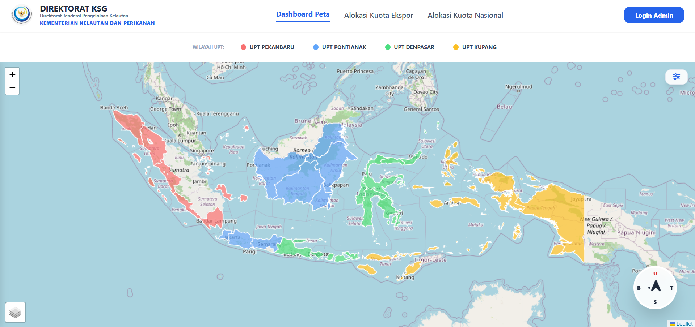
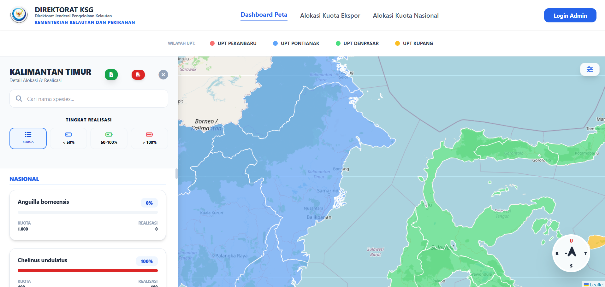
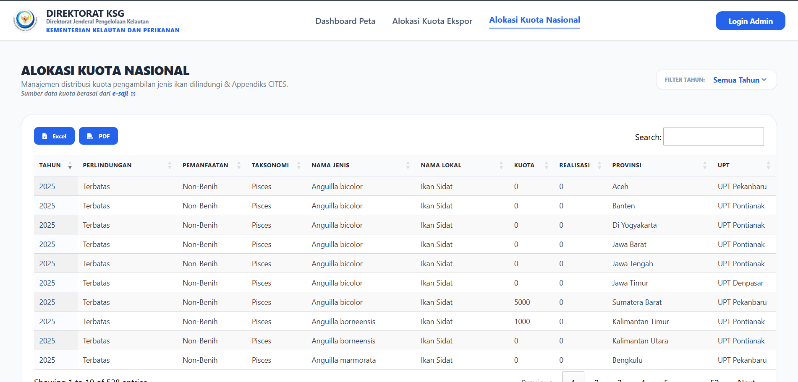
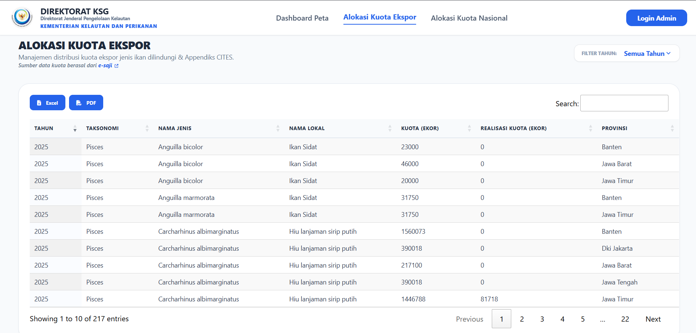

SIKONAS | Sistem Informasi Kuota Nasional
Prototype




What is SIKONAS?
web-based platform designed to support the management, monitoring, and visualization of national quota allocations. The system integrates quota data into structured information and interactive visualizations, making it easier to monitor quota distribution and support data-driven decision-making.
Key Features
- National Quota Allocation
- Quota Distribution Map Dashboard
- Export Quota Allocation
Provides comprehensive information on national quota allocations, including quota distribution by region and commodity. This feature enables users to monitor allocated quotas and compare quota distribution across different regions.
An interactive, map-based dashboard that visualizes the geographic distribution of quota allocations. Users can explore quota distribution across regions and identify spatial patterns through intuitive data visualization.
Provides information on export quota allocations, allowing users to monitor the amount and distribution of quotas designated for export activities. The data is presented in a structured format to facilitate monitoring and analysis.
Project Objective
SIKONAS was developed to improve the transparency, accessibility, and efficiency of quota management by integrating quota data with interactive dashboards and geographic visualization.